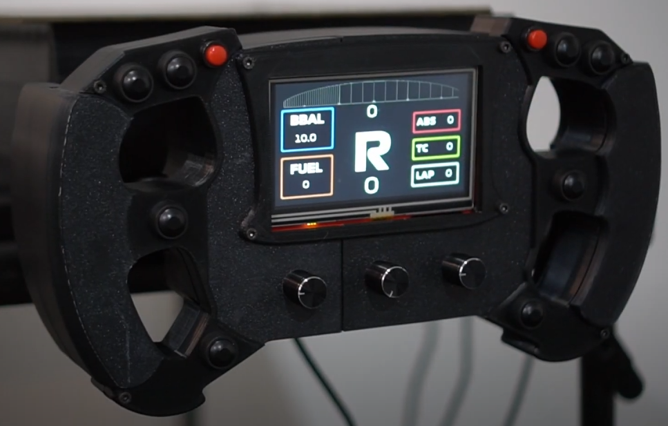
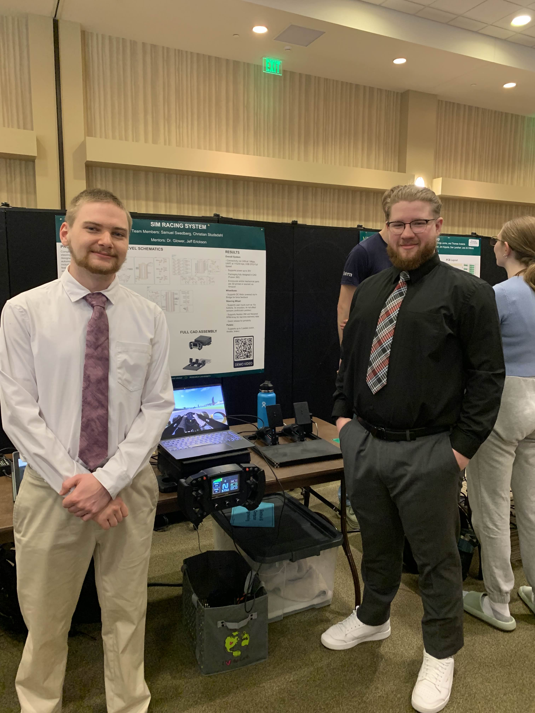
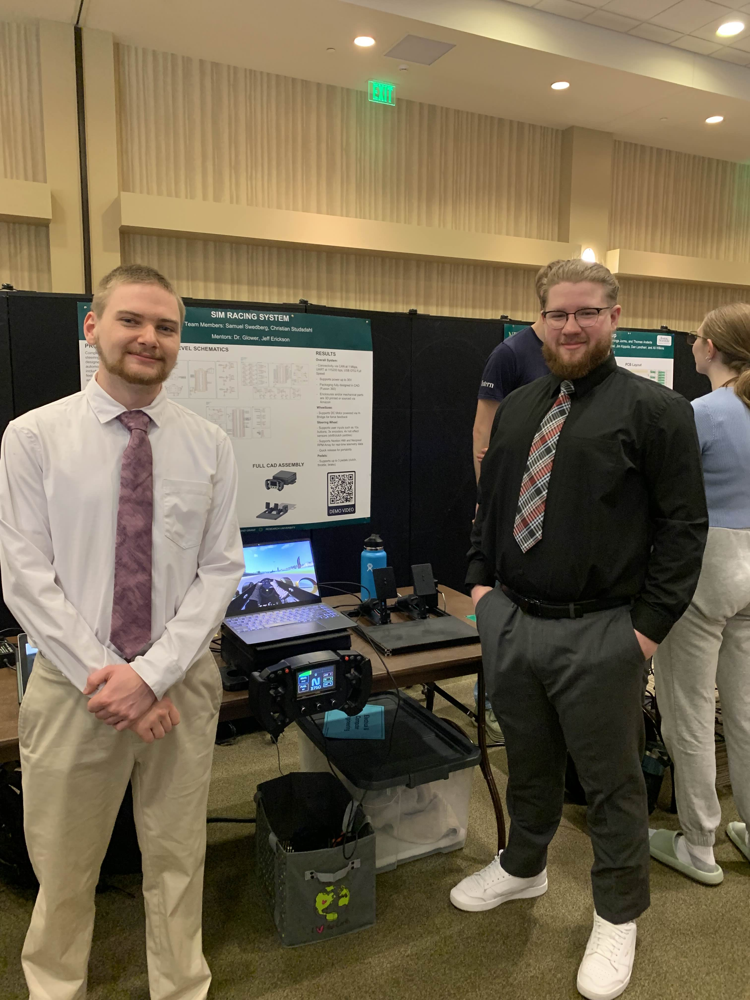

Sim Racing Wheel
Click here to see the Demo VideoThe goal was to design a steering wheel, wheelbase, and pedals compatible with sim racing and automotive video games. The steering wheel is Formula 1 style and features real-time telemetry data. The wheelbase features a belt driven motor for force feedback.
NDSU Senior Design Expo Poster
Key Features
- Custom-designed 3D printed wheelbase enclosure along with aluminum extrusion as a base frame
- Belt driven motor provides realistic force feedback
- Utilizes STM32 microcontrollers and C firmware
- The data can be displayed through the telemetry screen or a Neopixel RPM array
- User input is received via buttons, encoders, and hall effect sensor paddles
- The steering wheel and pedals are connected directly to the wheelbase via USB cables
Tools & Tech
- C, FreeRTOS, CAN, UART
- STM32F446, STM32F103
- CAD in Fusion 360, PCB Design in Fusion 360 Electronics
- 3D printing (ABS, PLA, PA6-CF)
Links
Photos
 

"Super Technical" Section
This section is more tailored for those who are more technical and want to understand what's going on under the hood.
The system uses a CAN bus network to handle communication between the three main components: the wheelbase, steering wheel, and pedals. Each device is assigned a unique CAN ID for message identification and filtering:
- Wheelbase: 0x100
- Steering Wheel: 0x200
- Pedals: 0x300
These identifiers enable each node to selectively process relevant messages using hardware filtering or software-level message parsing, ensuring efficient and organized communication across the bus.
The wheelbase serves as the central hub of the system and handles both force feedback and inter-device communication. Powered by an STM32F446 microcontroller. Runs FreeRTOS to manage real-time tasks, including motor control, CAN communication, and USB interaction. Implements a composite USB device driver (HID + CDC), allowing the system to be recognized as a standard game controller in Windows. Leverages Windows native gamepad support for broad compatibility across racing titles. Acts as the primary node on the CAN bus (ID: 0x100), receiving inputs from the steering wheel and pedals and handling motor response accordingly.
The steering wheel provides user input and real-time telemetry display. Receives telemetry data from the wheelbase over CAN bus. Displays information such as RPM, gear, and speed using an LCD display and can support Neopixel array. Includes buttons, rotary encoders, and paddle switches for interactive input. The paddle activation is measured using hall effect sensors and magnets. Sends control inputs back to the wheelbase for processing and transmission to the PC.
The pedal system captures driver input and relays it to the wheelbase. Uses a potentiometer to measure the angle of the pedal arm, however going forward I would recommend hall effect sensors or a load cell for measuring angle/force. Sends position data (throttle, brake, clutch) to the wheelbase for inclusion in the USB game controller report.
The system is complemented by a custom Python application running on the PC, which acts as the communication bridge between the game telemetry and the embedded hardware. It reads telemetry data from the video game, in our case Assetto Corsa. Assetto Corsa supports a shared memory from the kernel level which allows us to parse it in real-time. Intially we tried to use a UDP socket to the game, however it would be behind by a couple of seconds. The UDP socket is primarily useful for logging and reviewing session data afterwards, not real-time telemetry. The shared memory library along with our application is then able to transmit relevant values—such as RPM, speed, gear, and DRS status—over serial to the STM32 devices.